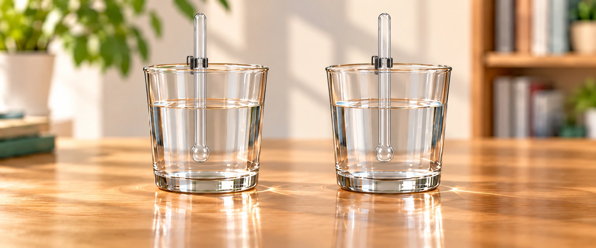

從溫度變化，找到熱傳遞的路徑
六個學習區塊・一個單元小測同樣的兩杯水，在不同環境會怎麼變？
熱傳方向：水溫與環境溫度的比較
在房間裡，熱水變涼、冷水變暖；可是冷水放進冰箱，卻會更冷耶！
同樣是冷水，周圍的溫度不同，變化就不一樣。如果周圍比熱水還熱，又會怎樣呢？
房間 25°C

等待觀察熱由高溫處傳向低溫處。
流光為熱傳方向示意；切換環境回到起始水溫。
準備好，按開始觀察。
「原來不能只看水有多冷、多熱，還得比較它和周圍環境的溫度！」
水溫描述冷熱，吸熱、放熱描述的是因溫差而傳遞的能量。換成兩個物體彼此傳熱，最後也會同溫嗎？
一熱一冷靠在一起，最後會怎樣？
熱平衡：物體之間及與環境的熱交換
一塊變冷、一塊變暖，它們最後會停在哪個溫度呢？
隔熱盒能減慢熱交換，卻不能完全隔絕。它們最後會跟誰一樣暖呢？
器材圖片載入中…
左右拖曳鋁塊，讓它們貼合或分開
左右方向鍵移動金屬；End 貼合另一塊，Home 往外分開。
初溫 A 60°C、B 20°C，室溫 25°C。時間與傳熱速度為教學示意。
原來拉開後溫度還會慢慢變；貼合時，兩塊就更快變得一樣暖！
兩塊同溫後，仍會和 25°C 的房間交換熱；最後和環境同溫，整體才達到熱平衡。熱又是怎麼傳過去的呢？
鍋底受熱，把手為什麼也變暖？
熱傳導：材料與沿途溫度的變化
只有鍋底在受熱，把手怎麼也慢慢變暖了？
把手和鍋身連在一起。換成木柄，變化也會一樣快嗎？
追蹤鍋具的傳熱路徑
室溫 25°C・相同加熱條件

電熱板尚未開啟；按下「開始加熱」，讀數會自動更新。
原來熱會從鍋身傳到接頭，再沿著把手傳過來！
這是熱傳導。木材也會傳熱，只是較慢，所以常被用在握柄上。
水和空氣怎麼把熱帶走？
熱對流：水與空氣的流動
鍋底把熱傳給水，可是上面的水沒有碰到鍋底，也會慢慢變熱。熱是怎麼到上面去的呢？
水也會流動呀。底下的水受熱後，會留在原處，還是跑到別的地方？
水槽底部局部受熱
尚未開始
沿著流動標記，觀察受熱處的水與周圍的水各往哪裡移動。
開始觀察後，留意中央與兩側的流動方向。
以室溫附近、下方持續受熱並向周圍散熱的情境示意。流線與顏色用來比較流動及相對冷暖，不是固定流路、實際流速或溫度量測；空氣的流動以標記顯示。
原來是水和空氣自己在移動，也把能量帶到別的地方了！
對，這就是對流。往上走的是受熱的水或空氣。可是太陽和地球中間隔著太空，能量又怎麼傳過來呢？
沒有碰到，也能傳熱嗎？
熱輻射：太陽與地球之間的能量傳遞
太空裡沒有空氣，太陽的能量怎麼到達地球？
觀察輻射的方向，再加入遮擋板比較直接照射的差異。
輻射能穿越沒有空氣的太空，將能量傳向地球。
圖中比較直接照射；遮擋物也可能吸熱與再放熱。天體大小、距離為示意。
原來不需要接觸，也不需要空氣作為介質，能量也能傳遞。
這就是輻射。現在找到了三種方式，試著減慢它們，讓水溫維持久一點。
怎麼讓熱水慢一點變涼？
保溫與保冷：不同傳熱路徑的比較
如果讓熱交換慢一點，熱水就能保溫久一點吧？
一次改一種設計，看看主要影響哪條傳熱路徑。
兩杯初始 60°C、環境 25°C，均已加蓋。各路徑以簡化模型比較；更改設計會回到相同起點。
不同設計能減少不同路徑的傳熱；生活中也可能同時有好幾種方式。
保溫和保冷都在減慢熱交換。換成保冷水壺，這次由你判斷。
單元小測
幫小葵找出保冷水壺的漏熱路徑
水壺裡是 10°C 的冷水，外面是 25°C 的環境，陽光正照在水壺上。
這次要讓冷水維持低溫，我要先找出熱從哪裡進來。
先比較溫度，再分辨金屬、流動空氣和陽光這幾條路。
互動用來比較熱傳方向與方式；時間、顏色與速率為教學示意。
回到溫度與熱單元總覽